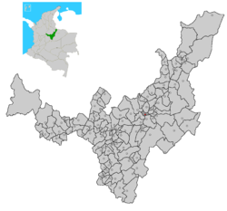

El municipio de Nobsa, según los datos del censo DANE 2018 y sus proyecciones poblacionales cuenta con
una población total de 16.446 habitantes para el año 2020, que comparada con el año 2015 muestra un aumento
de 1.575 habitantes y se espera que para el año 2023 aumente en 327 habitantes, este comportamiento se
puede asociar a migración de población venezolana, oportunidades de empleo que genera el municipio por ser
corredor industrial de Boyacá y por nacimientos. Al comparar al municipio de Nobsa con respecto al
departamento se observa que el municipio ocupa el 1.32% de la población total de Boyacá.
Una alternativa para analizar los patrones diferenciales de distribución de la población es el análisis de la
densidad poblacional, la cual hace referencia a la relación cuantitativa que existe entre la cantidad de población
y la superficie territorial que ésta habita, generalmente expresada en habitantes por km2.
En el mapa de densidad poblacional del departamento de Boyacá, el municipio de Nobsa se encuentra ubicado
con un color rosado indicando una densidad poblacional de 310.3 habitantes por kilómetro cuadrado, lo que
muestra que la población se encuentra concentrada.
Comparando el municipio de Nobsa con los municipios aledaños como Duitama y Sogamoso, se observan que
estos tienen mayor densidad poblacional; mientras que, con los municipios de Corrales, Floresta, Tibasosa y
Tópaga, son menos densamente poblados.
Para el año 2020 según las proyecciones del Censo DANE la distribución por área geográfica del municipio de Nobsa, muestra que el área urbana es de 5.277 habitantes correspondiente al 32.1% y para el área rural es de 11.169 habitantes equivalente al 67.9% de la población total, distribuidos en las 11 veredas del municipio y el corregimiento de Belencito. Esta distribución de la población indica la importancia de buscar estrategias que permitan mejorar la salud de las comunidades rurales y enfocar las acciones de promoción y prevención en esta área.
Grupos étnicos son aquellas comunidades que comparten un origen, una historia, una lengua y unas características culturales y/o rasgos físicos comunes, que han mantenido su identidad a lo largo de la historia como sujetos colectivos. En Colombia se reconocen legalmente cuatro grupos étnicos: Indígenas, Afrocolombianos (incluye afrodescendientes, negros, mulatos, palenqueros de San Basilio), Raizales del archipiélago de San Andrés y providencia y ROM o gitano. Según el censo de las etnias reconocidas en Colombia, el 99,09% la población del municipio de Nobsa no se reconoce dentro de los grupos étnicos y los restantes se reconocen como: afrocolombianos 0,09% y el 0.82% de la población no informa acerca del grupo étnico en el cual se reconoce; en el municipio no se reconocen dentro de los grupos étnicos de indígenas, ROM Palenquero o Raizal.
Una pirámide de población muestra gráficamente la composición de una población según la edad y el sexo, es
lo que se denomina estructura poblacional. Las barras horizontales representan los números o las proporciones
de hombres a mujeres para cada grupo. Evidenciando la composición de la población por medio de los
elementos, características o atributos que permiten cualificar una población.
En la figura 1 se observa la pirámide poblacional del municipio de Nobsa, en ésta se representa gráficamente
datos básicos de una población, tales como sexo y edad y permite identificar fenómenos demográficos como
son el envejecimiento poblacional, la existencia o no de equilibrio entre los géneros y los efectos de
acontecimientos catastróficos que puedo sufrir la población.
En esta figura se observa que la pirámide del municipio es estacionaria, presenta una base amplia una cúspide
estrecha; se aprecia un equilibrio entre todos los grupos de edad, consecuencia de una natalidad y mortalidad
que se mantienen sin variaciones significativas durante un periodo de tiempo largo.
La relación entre hombres y mujeres en el municipio de Nobsa para el año 2020 muestra que por cada 92
hombres hay 100 mujeres, que comparado con el año 2015 es igual y lo que se proyecta para 2023 es que la
relación sea de 93 hombres por 100 mujeres.
Los grupos de edad donde se concentra la mayor cantidad de población son de 20 a 24 años con un total de
población de 676 hombres y 688 mujeres y los grupos en donde menos se concentra la población son de 75 a
79 años, en cuanto a la población productiva que oscila entre los 25 a 59 años, en general se puede observar
que la población permanece en el municipio.
Como características relevantes se identifican salidas de población en los grupos de 15 a 24 años que se
relaciona con búsqueda de estudio superior; en el quinquenio de 30 a 34 años posiblemente por búsqueda de
trabajo en poblaciones intermedias o capitales y mortalidad, por el contrario, se observa ingreso de población
en los grupos de 50 años en adelante, que se explican por reingreso de personas adultas, cesantes.